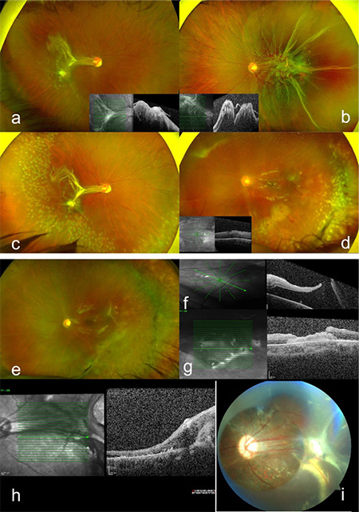
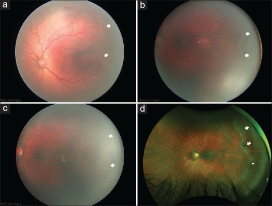

1415 — Bong võng mạc muộn ở mắt ROP đã hồi phục: lỗ hoại tử – rách ở vùng không có mạch, khi nào laser dự phòng và chọn mổ nào / Late rhegmatogenous retinal detachment in regressed retinopathy of prematurity
Tags: pattern:bong-vong-mac pattern:rach-vong-mac pattern:rop pattern:vong-mac-khong-mach vung:vong-mac vung:dich-kinh score:ICROP protocol:sieu-am-B-scan protocol:laser-du-phong incidentaloma:rop
Mức chắc chắn (certainty): tổng hợp y văn (literature synthesis) — tự biên từ 1 thuần tập phẫu thuật 15 mắt/14 bệnh nhân bong võng mạc có lỗ muộn sau ROP hồi phục (PMC11590703) và 1 tổng quan về vùng võng mạc không có mạch tồn tại kèm bảng 7 nghiên cứu FA (PMC13431205); các loạt lớn hơn (Hamad 186 bệnh nhân, Kaiser, Tufail, Sen) được dẫn lại từ 2 bài này, không đọc toàn văn trực tiếp — số của chúng lấy đúng như bảng 1 của PMC11590703. Phần chưa có bằng chứng (hiệu quả laser dự phòng, thời điểm laser tối ưu) ghi rõ "chưa rõ".
Câu chốt: mắt ROP "đã hồi phục" không phải mắt lành — nó là mắt có võng mạc ngoại vi không có mạch (persistent avascular retina, PAR), mỏng, thoái hóa dạng lưới và dính chắc vào dịch kính cũ; khi nhãn cầu lớn dần, chỗ yếu đó rách muộn ở tuổi 3–26 (trung bình 12). Ba câu quyết định: (1) mắt có PAR/lưới/lỗ hoại tử chưa? (2) có triệu chứng hay mắt "câm" (trẻ chậm phát triển, không kêu)? (3) nếu đã bong: có co kéo sau cực + PVR không. Vì mổ lần đầu thất bại 53%, PPV đơn thuần thất bại 100% trong loạt có PVR, và thành công giải phẫu cuối chỉ 73% sau trung bình 2,3 lần mổ.
1. Tổng quan bệnh học – cơ chế hình ảnh
- Vì sao vùng ngoại vi không có mạch (PAR) lại là "điểm yếu chết người": trong ROP, mạch máu võng mạc ngừng phát triển trước khi tới ora serrata (do oxy sau sinh ức chế VEGF, rồi VEGF tăng đột ngột gây tân mạch). Sau khi hồi phục — dù tự nhiên, laser hay anti-VEGF — mạch thường không mọc tiếp tới cùng, để lại PAR. Vùng này không có hàng rào máu–võng mạc tại chỗ, mỏng, thiếu oxy mạn, nên dễ thoái hóa dạng lưới (lattice-like degeneration), lỗ hoại tử (atrophic hole) và dính chắc vào dịch kính.
- TẠI SAO bong xuất hiện MUỘN chứ không ngay: đây là bài toán cơ học, không phải viêm. Võng mạc là mô thần kinh không tăng sinh theo thể tích nhãn cầu; khi trẻ lớn, nhãn cầu dài ra trong khi võng mạc ngoại vi dính vào "gờ" xơ cũ (former ridge), tạo lực căng ly tâm thường trực. Lực này tích lũy nhiều năm → rách xuất hiện ở tuổi thiếu niên/người trẻ, đúng như loạt của chúng ta (3–26 tuổi, trung bình 12) và các loạt cũ (8,2–35 tuổi).
- Vì sao dịch kính là "mảnh ghép thứ hai": mắt ROP hồi phục có màng/dải xơ dính chắc vào võng mạc và gờ cũ. Khi rách xảy ra, dịch kính lỏng hóa đi qua lỗ, nhưng co kéo tiếp tục — nên bong vừa có lỗ (rhegmatogenous) vừa có co kéo (tractional), và đó là lý do PVR xuất hiện sớm: 10/15 mắt (67%) đã có PVR ngay lúc nhập viện.
- Ngưỡng định lượng nằm lòng:
- Tần suất rách/bong ở người sống sót sau ROP (tổng hợp trong phần mở đầu PMC11590703): rách võng mạc 11–31%, bong võng mạc 15–39%.
- PAR là phổ biến, không phải ngoại lệ (bảng 1 của PMC13431205): sau anti-VEGF cho ROP type 1/AROP: 31,65–100%; ở ROP hồi phục không điều trị: 33,0–62,5%. Loạt Ling 2023 (trẻ chỉ sinh non, không ROP): 0% — nghĩa là PAR gắn với ROP, không gắn với sinh non đơn thuần.
- Ngưỡng gọi là "bất thường" trên FA: trẻ bình thường có vùng không tưới máu 0,9 đường kính đĩa (DD) phía thái dương (0,5–1,5; SD 0,3) và 0,6 DD phía mũi (0,25–1,0; SD 0,2); do đó > 2 DD tính từ ora serrata được coi là PAR bệnh lý (Blair, dẫn qua PMC13431205).
- Hậu quả của PAR (Hamad, 186 bệnh nhân ≥ 6 tuổi, không điều trị ROP lúc nhỏ): 170/180 mắt có vùng không có mạch; 84,1% trong số đó có tổn thương ngoại vi kèm theo (lưới, lỗ, rách). Trong 88 mắt được mổ bong: áp lần đầu 62,5%, 15,9% còn dầu silicone sau mổ cuối, 8% không cứu được hoặc không còn cảm giác sáng (NLP).
- Loạt mổ của chúng ta (PMC11590703): 100% bong đã bong hoàng điểm (macula-off); 60% bong toàn bộ, 40% bán phần (chủ yếu thái dương–dưới); kiểu rách: nhiều lỗ/rách 67%, dialysis 20%, rách khổng lồ (giant retinal tear) 7%, không thấy lỗ 7%; PVR 67%.
- Thành công phẫu thuật: thất bại lần đầu 53% (8/15) — đai củng mạc (SB) 33%, cắt dịch kính (PPV) 100%, SB + PPV 40%; thành công giải phẫu cuối 73% sau trung bình 2,3 lần mổ (1–5); theo dõi 47 tháng (10–126); 20% còn dầu silicone, 7% teo nhãn cầu.
- Chức năng: thị lực 2,1 ± 0,6 logMAR (≈ 20/2500) → 1,4 ± 0,8 logMAR (≈ 20/500), cải thiện có ý nghĩa (p = 0,011). Nhưng chỉ nhóm không tái phát mới cải thiện có ý nghĩa (−0,89 logMAR, p = 0,04); nhóm tái phát dù áp võng mạc cuối cùng vẫn không cải thiện (−0,31 logMAR, p = 0,1) — "áp được" không đồng nghĩa "thấy được".
- Mắt bên kia (12 mắt) — bằng chứng cho "bệnh hai mắt": PAR 33%, màng dịch kính ở gờ cũ 25%, lưới 50%, lỗ hoại tử 33%, kéo – lệch hoàng điểm (macular ectopia/drag) 25%, nếp hoàng điểm 7%, ly thượng võng mạc co kéo 7%; 8/12 mắt được laser 360° dự phòng, 2 mắt đặt đai dự phòng; khúc xạ cầu tương đương −3,2 D (−6,50 đến +1,00). Mắt "tốt" vẫn là mắt có bệnh.
- Bảng đối chiếu 6 loạt (Table 1, PMC11590703): Kaiser 2001 (31 mắt, 26,6 tuổi): SB 73%, PPV 100%, phối hợp 100%, thành công cuối 96%; Park 2004 (5 mắt, 8,2 tuổi): 0 / 0 / 100%, cuối 20%; Tufail 2004 (40 mắt, 22,3 tuổi): 72 / 57 / 75%, cuối 97%; Sen 2019 (22 mắt, 10,4 tuổi): 71 / 47 / –, cuối 73%; Hamad 2019 (88 mắt, 35 tuổi): 86 / 75 / 26%, cuối 76%; loạt này (15 mắt, 12 tuổi): 67 / 0 / 60%, cuối 73%.
- Vì sao "hồi phục" không dừng ở tuổi nhỏ: tái hoạt ROP sau anti-VEGF đã được báo cáo muộn 2, 3, 6 và thậm chí 10 năm sau tiêm; mọi mắt tái hoạt đều có PAR, và VEGF từ PAR được coi là nguồn kích thích (PMC13431205). Vì vậy theo dõi là suốt đời, không phải "khám tới 1 tuổi là xong".
2. Mẫu hình + chẩn đoán phân biệt theo vị trí (gamut)
- Mẫu hình cần nhận ra (pattern): võng mạc bong ở ngoại vi, bờ gấp, có lỗ/ rách ở vùng mỏng không có mạch, kèm dải xơ từ gờ cũ tới đĩa thị/hoàng điểm; nhãn cầu cận thị, hoàng điểm lệch (drag).
- Gamut theo cơ chế (vì sao bong ở mắt ROP không "một loại"):
- Lỗ hoại tử trong PAR (atrophic hole) — hay ở thái dương, trên nền lưới; thường bong chậm, khu trú.
- Rách do co kéo tại gờ cũ (tractional tear at former ridge) — dính chắc, khó bóc; đây là nơi PVR sinh ra.
- Dialysis / rách khổng lồ — lực căng ly tâm lớn, hay gặp ở trẻ lớn; 7% rách khổng lồ trong loạt.
- Ly thượng võng mạc co kéo (tractional retinoschisis) — không phải bong, nhưng dễ nhầm và có thể tiến triển thành bong co kéo.
- Bong co kéo thuần (TRD) do tái hoạt tân mạch (muộn sau anti-VEGF) — khác hoàn toàn về xử trí (bài 1406).
- Bong do chấn thương/tự làm hại — nhóm trẻ chậm phát triển, hành vi tự hủy hoại (50% loạt có khuyết tật trí tuệ) — không được bỏ qua bối cảnh.
- Gamut theo tuổi phát hiện: nhỏ (3–8 tuổi) thường do kéo – lỗ tại gờ; lớn (10–26 tuổi) thường do lỗ hoại tử/lưới + nhãn cầu dài.
- Mnemonic "PAR–LATTICE–TEAR": Persistent avascular retina → Atrophic holes → Ridge traction; Lattice; Tear (dialysis/giant); Tractional schisis; Iatrogenic (laser/cryo, phaco sớm); Cicatrix posterior (macular drag); Early PVR.
3. Bảng so sánh phân biệt (ma trận đối chiếu)
| Thực thể (entity) | Hình ảnh điển hình | Chốt vào (rule-in) | Chốt loại (rule-out) | Gợi ý xác nhận |
|---|---|---|---|---|
| Bong có lỗ muộn sau ROP hồi phục | Bong ngoại vi, bờ gấp, lỗ/lưới ở vùng không có mạch, dải xơ về gờ cũ, nhãn cầu cận thị | Lỗ nằm trong PAR/lưới + dải xơ tới gờ cũ + bong hoàng điểm | Không có lỗ và màng dính đĩa thị di động theo mắt → nghĩ bong co kéo (TRD) | Soi đáy mắt góc rộng + B-scan khi môi trường đục; FA đánh giá PAR |
| Ly thượng võng mạc co kéo (tractional retinoschisis) | Tách lớp trong võng mạc, không có màng di động tự do; OCT thấy cầu nối mô | OCT: khoang tách trong võng mạc, không có lỗ xuyên | Màng di động, dính đĩa thị, lỗ thấy rõ → bong thật | OCT cầm tay; B-scan phân biệt "màng nổi" vs "lớp tách" |
| Bong co kéo do tái hoạt tân mạch (TRD) | Màng fibrovascular dày, co kéo dọc, không lỗ; thường sau anti-VEGF muộn | Tân mạch hoạt động + màng dày co kéo + không lỗ | Lỗ hoại tử đơn độc trong PAR → bong có lỗ | FA (dò/tân mạch), siêu âm B |
| Lỗ hoàng điểm thứ phát sau mổ | Bong tái phát sau khi đã áp, lỗ trung tâm hoàng điểm, màng co kéo sau cực | Lỗ hoàng điểm mới sau mổ + co kéo sau cực | Bong do hở lỗ ngoại vi chưa bịt → kiểm tra chu vi 360° | OCT; trong loạt: 2 mắt do lỗ hoàng điểm thứ phát, xử lý bằng màng ối |
| Bong do chấn thương/tự làm hại | Dialysis, bong lan nhanh, không tương xứng tổn thương nền | Tiền sử chấn thương/hành vi tự hại + dialysis | Bong tiến triển từ lỗ hoại tử có sẵn | Hỏi kỹ người chăm sóc; khám toàn thân |

Ca 12 tuổi (32 tuần, 2.000 g): (a, b) kéo – lệch hoàng điểm hai bên + PAR, bong có lỗ thái dương trên mắt trái; (c) laser dự phòng trên lưới có sắc tố ở mắt phải; (d) SB + PPV mắt trái; (e) áp sau 1 tháng; (f) bong tái phát do lỗ hoàng điểm thứ phát; (g, h) màng ối bịt lỗ; (i) áp bền sau 8 tháng. Nguồn: Özdemir Zeydanlı E et al., Turk J Ophthalmol 2024 (PMC11590703), CC BY-NC-ND 4.0 — nguyên bản, không chỉnh sửa.Dấu hiệu "chốt" trên từng phương thức
- Siêu âm B-scan: màng dính đĩa thị + di động theo mắt (aftermovement) = võng mạc bong; màng không dính đĩa thị = màng dịch kính (không mổ). Khi đục thể thủy tinh/xuất huyết dịch kính — B-scan là bắt buộc trước mổ.
- OCT cầm tay: phân biệt ly thượng võng mạc với bong thật, và phát hiện co kéo hoàng điểm khi đáy mắt nhìn được.
- FA: đo diện tích PAR, tìm dò/tân mạch, quyết định laser bổ sung thay vì mổ lại.
4. Protocol chụp + hệ phân độ & ngưỡng xử trí
- Theo dõi mắt ROP đã hồi phục (không có triệu chứng):
- Khám đáy mắt giãn đồng tử hằng năm đến hết vị thành niên, rồi suốt đời (nguy cơ rách muộn tới 26 tuổi trong loạt này; tái hoạt anti-VEGF báo cáo tới 10 năm).
- Chụp đáy mắt góc rộng (RetCam/UWF) mỗi lần khám: so chuỗi ảnh theo thời gian, không đọc 1 ảnh đơn.
- FA khi: PAR rộng ở zone II, có mạch bất thường ngoại vi (xoắn, phân nhánh bất thường, mạch vòng, rò), không theo dõi được, hoặc đã có lỗ/rách.
- Siêu âm B-scan khi không nhìn được đáy mắt (đục thể thủy tinh, xuất huyết dịch kính) hoặc trẻ không hợp tác.
- Khám dưới gây mê (EUA) cho trẻ chậm phát triển/không nói — nhóm này chậm phát hiện bong vì không kêu; 50% loạt có khuyết tật trí tuệ.
- Chỉ định laser dự phòng lên PAR (chưa có bằng chứng cấp 1 — "chưa rõ"):
- Nên cân nhắc khi: PAR rộng/zone II, bất thường mạch trên FA, đã có lỗ hoại tử/lưới, hoặc khó tái khám.
- Lợi ích – giá phải cân: laser muộn (> 60 tuần tuổi sau kinh nguyệt) sau anti-VEGF cho cận thị −0,16 ± 2,2 D, so với laser nguyên phát −7,4 ± 5,2 D đo lúc 2–4 tuổi — tức chờ mạch mọc thêm rồi laser ít diện hơn thì ít cận thị hơn; nhưng đánh đổi bằng cửa sổ nguy cơ.
- Thời điểm laser tối ưu: chưa rõ; thực hành phổ biến 50–60 tuần tuổi sau kinh nguyệt.
- Protocol mổ (theo cơ chế, không theo "thói quen"):
- Đai củng mạc (SB) khi: còn thể thủy tinh, lỗ xác định được, ở mid-zone 2 hoặc trước, không co kéo sau cực → thất bại lần đầu 33% (thành công 67%); 4/6 mắt không có bệnh sau cực/PVR không tái phát.
- PPV đơn thuần: tránh như chiến lược đầu tay khi có PVR — trong loạt này thất bại 100%; bóc dịch kính ngoại vi ở mắt ROP rất khó vì dính chắc vào võng mạc và gờ cũ.
- SB + PPV phối hợp: chọn khi co kéo sau cực, nếp gấp, TRD, PVR → thất bại lần đầu 40% dù 80% nhóm này có PVR và 80% có co kéo — tốt hơn PPV đơn thuần; đai giúp nâng đỡ dịch kính ngoại vi còn sót.
- Bổ trợ: cắt thể thủy tinh 40%, retinotomy/retinectomy 20%, dầu silicone 100% các ca cắt dịch kính. Lỗ hoàng điểm thứ phát (2 mắt) xử lý bằng màng ối (amniotic membrane graft).
- Ngưỡng tiên lượng (dùng để tư vấn trước mổ): tái phát 70% nếu có PVR vs 20% nếu không (p = 0,06); 67% nếu có biến đổi xơ sau cực vs 33% nếu chỉ tổn thương ngoại vi (p = 0,44) — chưa đủ cỡ mẫu để kết luận, nhưng đủ để giải thích trước mổ rằng mổ 1 lần là may mắn, 2–3 lần là bình thường.
flowchart TD
A[Mắt ROP đã hồi phục] --> B{Có PAR hoặc lưới hoặc lỗ hoại tử?}
B -->|Không| C[Theo dõi hằng năm tới hết vị thành niên]
B -->|Có| D{Đáy mắt nhìn được?}
D -->|Không| E[B-scan bắt buộc trước mọi quyết định]
D -->|Có| F{PAR rộng zone II, mạch bất thường, có lỗ, hoặc khó tái khám?}
F -->|Có| G[Cân nhắc laser 360 độ lên PAR]
F -->|Không| H[Theo dõi 6-12 tháng + FA khi nghi]
E --> I{Bong võng mạc?}
I -->|Không| C
I -->|Có| J{Có co kéo sau cực hoặc PVR?}
J -->|Không, lỗ ở mid-zone 2, còn thể thủy tinh| K[Đai củng mạc]
J -->|Có| L[SB + PPV phối hợp, dầu silicone]
K --> M{Tái phát?}
L --> M
M -->|Có| N[Đánh giá lại lỗ mới, lỗ hoàng điểm thứ phát, PVR; mổ lại]
M -->|Không| O[Theo dõi dài hạn, khám mắt bên kia]
5. Biến thể bình thường và cạm bẫy
- Biến thể "bình thường" dễ overcall: vùng không tưới máu ngoại vi ≤ 2 DD ở trẻ không ROP là sinh lý; đừng laser chỉ vì thấy vùng nhợt. Ngược lại, đừng coi 2 DD là ngưỡng tuyệt đối ở mắt ROP có lưới/lỗ.
- Cạm bẫy 1 — ly thượng võng mạc vs bong: trên B-scan, ly thượng võng mạc cho màng mỏng "nổi" trong võng mạc, còn bong là màng dính đĩa thị, di động. Mổ nhầm ly thượng võng mạc = mù không hồi phục; bỏ sót bong = PVR.
- Cạm bẫy 2 — "thấy một lỗ là đủ" (satisfaction of search): 7% ca có rách khổng lồ, 7% ca không thấy lỗ; phải soi 360°, đặc biệt thái dương–dưới. Bỏ sót lỗ thứ hai = thất bại lần đầu.
- Cạm bẫy 3 — lỗ hoàng điểm thứ phát sau mổ: bong tái phát trong 1 tháng sau khi đã áp có thể do màng co kéo sau cực tạo lỗ hoàng điểm mới (2 mắt trong loạt) — không phải "hở lỗ cũ"; OCT là chốt.
- Cạm bẫy 4 — trẻ chậm phát triển: không phàn nàn mất thị lực; tự làm hại gây chấn thương; gia đình coi là "mắt kém từ bé". Chỉ số then chốt là so ảnh UWF cũ, không phải lời kể.
- Cạm bẫy 5 — coi "đã laser/đã tiêm anti-VEGF" là hết nguy cơ: laser không tạo mạch, chỉ phá vùng thiếu oxy; PAR vẫn còn và vẫn rách. Anti-VEGF để lại PAR nhiều hơn và tái hoạt muộn — cần theo dõi lâu hơn, không ngắn hơn.
- Cạm bẫy 6 — dầu silicone "che" tổn thương: 20% còn dầu ở lần theo dõi cuối; dầu gây khó đánh giá ngoại vi và làm chậm phát hiện tái bong. Không được dừng theo dõi vì "đã có dầu".
6. Tự lượng giá — Blind Quiz
Ca 1 — Trẻ 12 tuổi, sinh 32 tuần/2.000 g, không điều trị ROP; mắt trái đột ngột giảm thị lực. Nhìn ảnh, mô tả trước.
- Gợi ý lâm sàng: thị lực 20/400 mắt phải, đếm ngón tay 1 m mắt trái.
- Câu hỏi: (1) Hai bên có gì giống nhau? (2) Mắt trái bong do gì, lỗ ở đâu? (3) Nếu mổ phối hợp mà 1 tháng sau bong lại, nghĩ gì? (4) Mắt phải xử lý thế nào?
Bấm để hiện đáp án (findings + chẩn đoán)
- Findings: (a, b) kéo – lệch hoàng điểm hai bên + vùng võng mạc không có mạch ngoại vi; mắt trái có bong võng mạc có lỗ ở góc thái dương trên. (c) laser dự phòng trên lưới có sắc tố ở vùng không có mạch của mắt phải. (d) SB + PPV mắt trái. (e) áp sau 1 tháng. (f) bong tái phát do lỗ hoàng điểm thứ phát (màng co kéo sau cực). (g, h) màng ối bịt lỗ. (i) áp bền sau 8 tháng sau khi lấy dầu.
- Chẩn đoán: bong võng mạc có lỗ muộn trên nền ROP hồi phục — cơ chế lỗ trong vùng không có mạch + co kéo gờ cũ, không phải viêm.
- Phản biện (theo Argon): ca này không điển hình ở chỗ đã mổ phối hợp mà vẫn tái bong; nhưng tái bong do lỗ hoàng điểm thứ phát đã được mô tả và là lý do phải OCT sau mổ sớm, không chỉ nhìn đáy mắt.
- Thị lực cuối vẫn đếm ngón tay 1 m dù áp võng mạc — đúng với quy luật: thành công giải phẫu ≠ thành công chức năng (nhóm tái phát không cải thiện có ý nghĩa: −0,31 logMAR, p = 0,1).
- Nguồn ảnh: Özdemir Zeydanlı E et al., Turk J Ophthalmol 2024 (PMC11590703), Fig. 1, CC BY-NC-ND 4.0.
Ca 2 — Bốn ảnh đáy mắt của bốn mắt khác nhau. Mắt nào đã từng ROP type 1, mắt nào type 2, và mắt nào đang có nguy cơ rách?

- Gợi ý: (a) lúc 33 tuần 6 ngày tuổi sau kinh nguyệt; (b) cùng mắt đó lúc 49 tuần 6 ngày; (c) lúc 64 tuần 2 ngày; (d) nữ 34 tuổi, tiền sử ROP type 2.
- Câu hỏi: (1) Mũi tên chỉ gì? (2) Vì sao (d) là mắt nguy cơ cao dù "chỉ" type 2? (3) Ngưỡng nào gọi là bất thường trên FA?
Bấm để hiện đáp án
- (a) ROP type 1, stage 3 zone II ngay lúc điều trị anti-VEGF — mũi tên là ranh giới võng mạc có mạch.
- (b) Cùng mắt sau điều trị: mạch ngừng phát triển (arrested vessels) và PAR ở zone III — đây là "di chứng" của anti-VEGF.
- (c) ROP type 2 ở 64 tuần 2 ngày: PAR zone III dù không cần điều trị — chứng minh PAR không chỉ do anti-VEGF.
- (d) Nữ 34 tuổi: PAR thái dương + thoái hóa dạng lưới (mũi tên) và lỗ hoại tử (đầu mũi tên) — nguy cơ bong có lỗ nhiều thập kỷ sau.
- Ngưỡng: > 2 DD tính từ ora serrata (bình thường 0,9 DD thái dương, 0,6 DD mũi) — dưới ngưỡng đó đừng overcall.
- Nguồn ảnh: Murakami T, Nudleman E, Taiwan J Ophthalmol 2026 (PMC13431205), Fig. 1, CC BY-NC-ND 4.0 — nguyên bản.
Bài liên quan chéo
- 456 – Bệnh võng mạc trẻ sinh non: zone–stage–plus & AP-ROP
- 458 – Di chứng & theo dõi dài hạn sau ROP
- 1406 – Tái bong & co kéo sau mổ ROP giai đoạn 4–5
- 410 – Giải phẫu học mắt
Ảnh
images/1415_bong-vong-mac-muon_Fundus_PMC11590703-Fig1.jpg— Fig. 1, PMC11590703, CC BY-NC-ND 4.0, nguyên bản.images/1415_vong-mac-khong-mach_Fundus_PMC13431205-Fig1.jpg— Fig. 1, PMC13431205, CC BY-NC-ND 4.0, nguyên bản.- Chi tiết nguồn/giấy phép:
images/CREDITS.mdvàsources.md.
Không dùng để chẩn đoán độc lập khi chưa có người hướng dẫn.